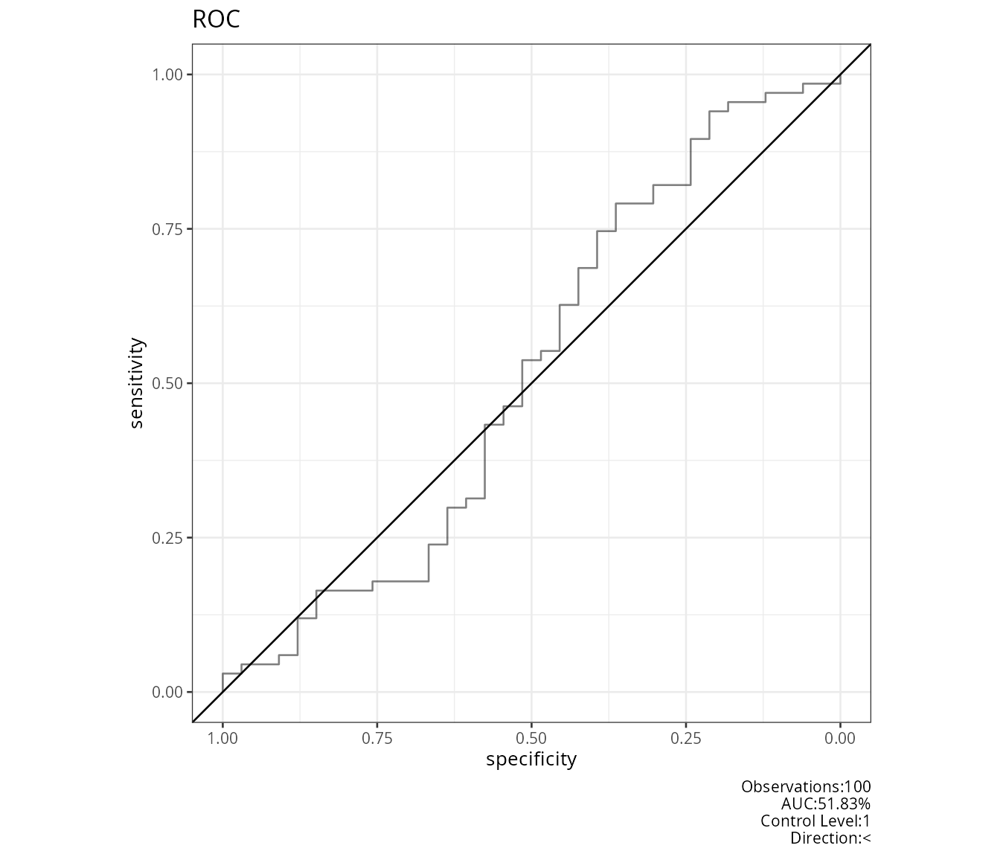
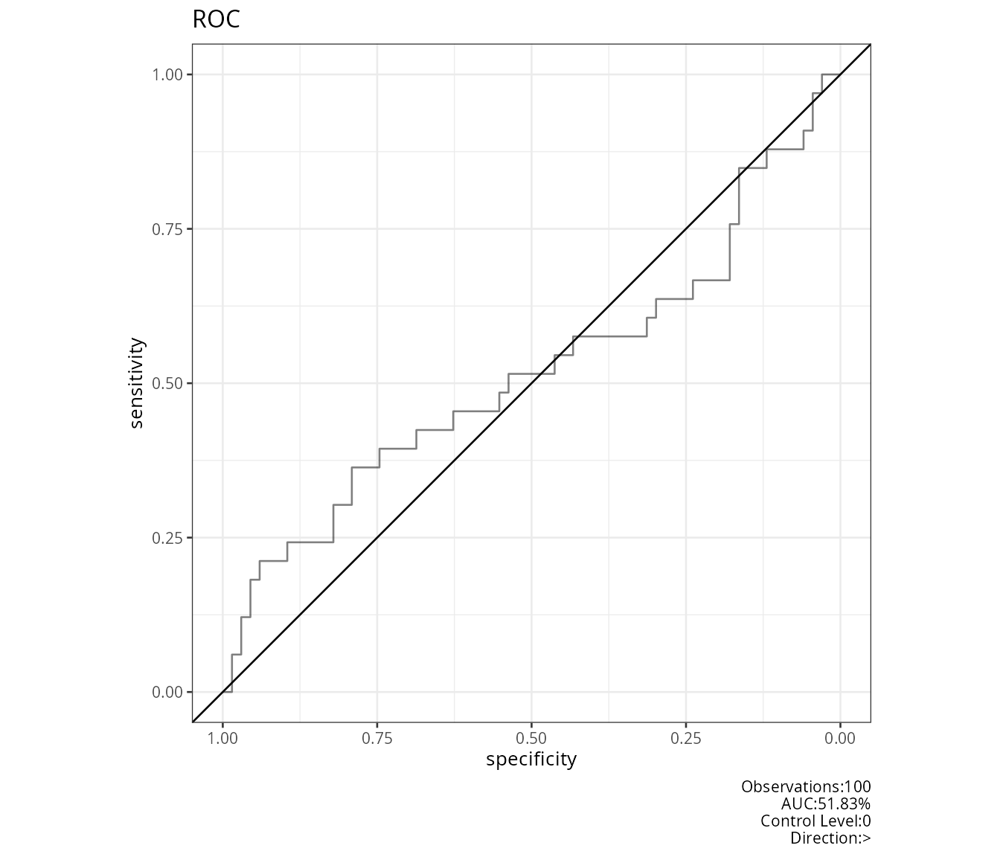
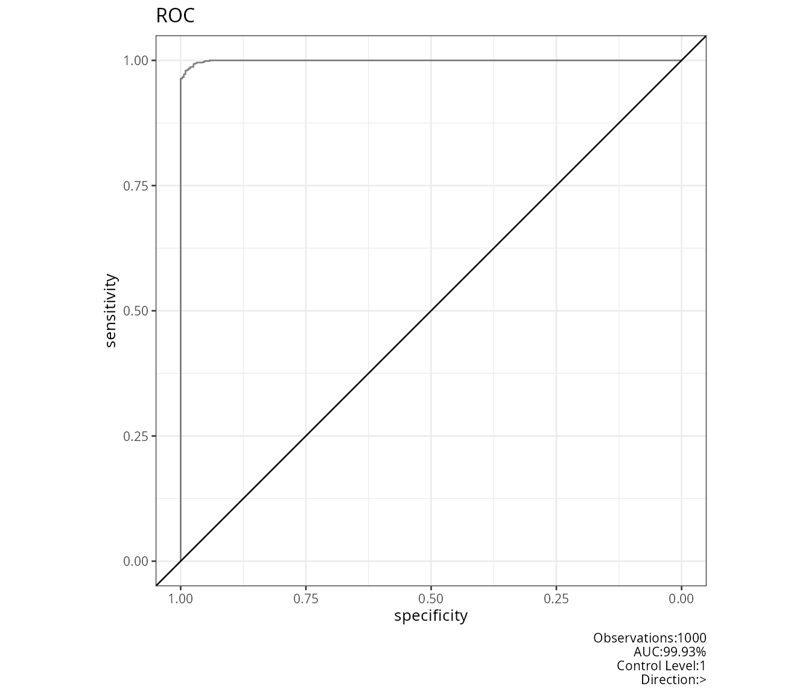
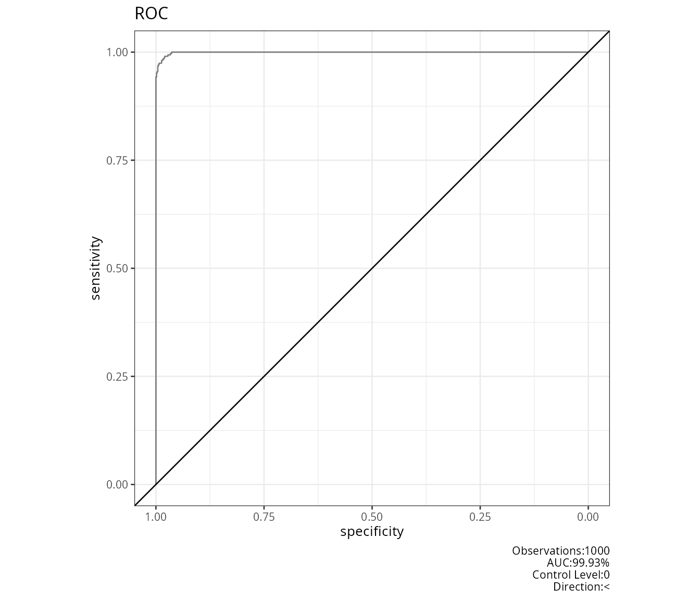
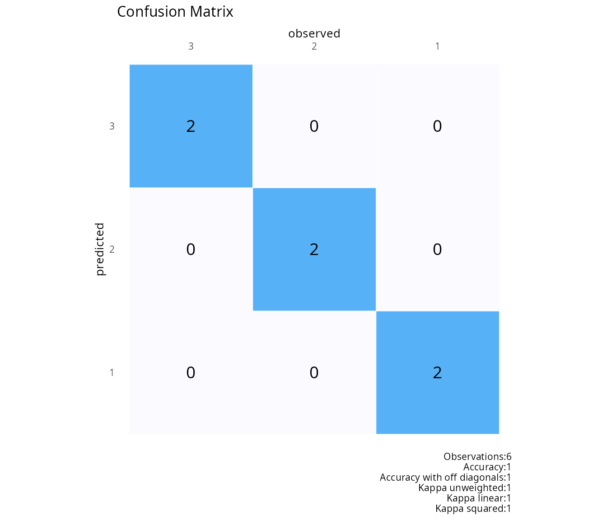
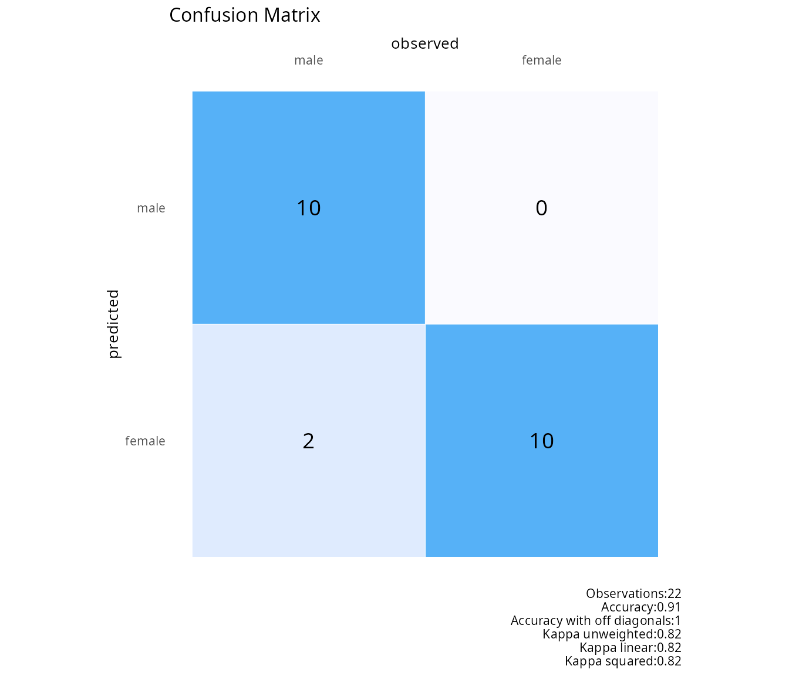
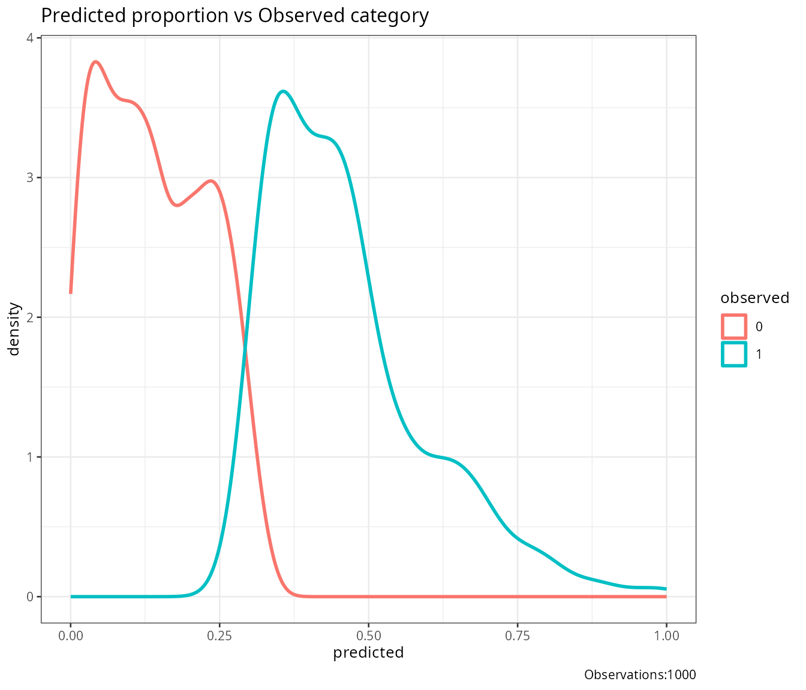
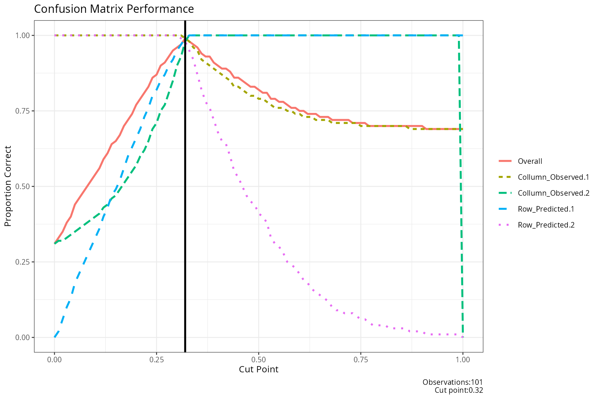
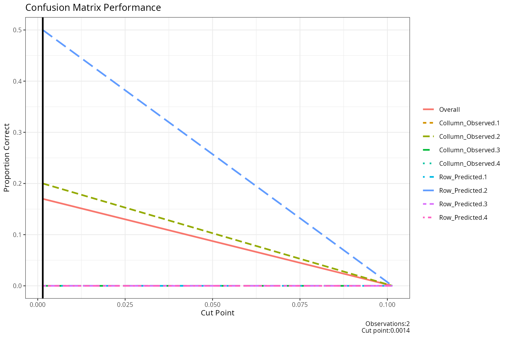
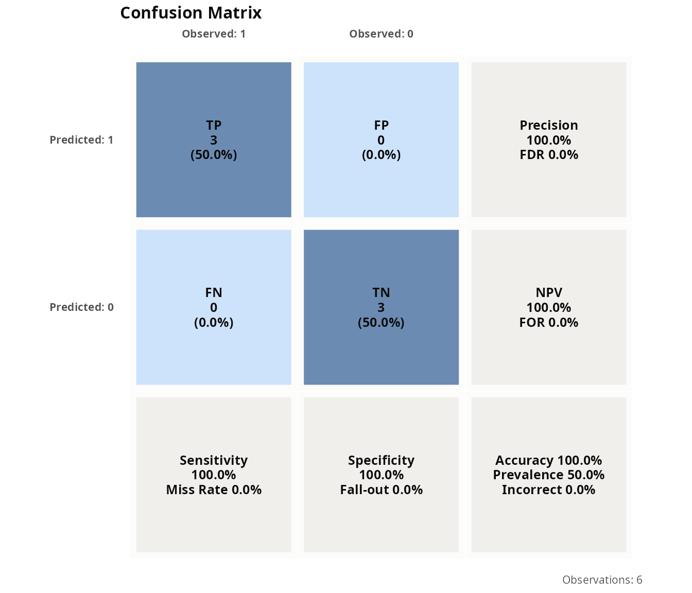

Training and testing models
Source:vignettes/articles/FUNCTIONS_TRAIN_TEST.rmd
FUNCTIONS_TRAIN_TEST.rmdDescription
This shows the output of useful functions for training and testing from the package rwf. The functions include plotting ROC curves, confusion matrices, separability plots, and evaluating confusion matrix performance at different cut-off points. Additionally, it demonstrates k-fold and k-sample cross-validation procedures, scaling data, and calculating confusion matrix statistics.
Installation instructions for rwf can be found here
The code can be found here
Plot Receiver Operating Characteristic ROC Curve
# Observed vector binary
observed<-round(abs(rnorm(100,m=0,sd=.5)))
# Predicted vector continuous
predicted<-abs(rnorm(100,m=0,sd=.5))
plot_roc(observed=observed,predicted=predicted)

# An example with a good prediction
df1<-data.frame(matrix(.999,ncol=2,nrow=2))
correlation_martix<-as.matrix(df1)
diag(correlation_martix)<-1
df1<-generate_correlation_matrix(correlation_martix,nrows=1000)
df1$X1<-ifelse(abs(df1$X1)<1,0,1)
df1$X2<-abs(df1$X2)
df1$X2<-(df1$X2-min(df1$X2))/(max(df1$X2)-min(df1$X2))
plot_roc(observed=round(abs(df1$X1),0),predicted=abs(df1$X2))

Plot Confusion Matrix
plot_confusion(observed=c(1,2,3,1,2,3),predicted=c(1,2,3,1,2,3))
observed<-c(rep("male",10),rep("female",10),"male","male")
predicted<-c(rep("male",10),rep("female",10),"female","female")
plot_confusion(observed=observed,predicted=predicted)
Plot Separability
This function generates a separability plot using ggplot2. It shows the density distribution of predicted probabilities for different observed categories. The plot helps to visualize how well the predicted probabilities separate the different observed categories.
df1<-data.frame(matrix(.999,ncol=2,nrow=2))
correlation_martix<-as.matrix(df1)
diag(correlation_martix)<-1
df1<-generate_correlation_matrix(correlation_martix,nrows=1000)
df1$X1<-ifelse(abs(df1$X1)<1,0,1)
df1$X2<-abs(df1$X2)
df1$X2<-(df1$X2-min(df1$X2))/(max(df1$X2)-min(df1$X2))
plot_separability(observed=round(abs(df1$X1),0),predicted=abs(df1$X2))
Plot Confusion Matrix Performance
This function evaluates the performance of a confusion matrix at different cut-off points. It iterates through a range of cut-off points, calculates the confusion matrix,and evaluates the proportion of correct classifications for each cut-off.
df<-data.frame(matrix(.999,ncol=2,nrow=2))
correlation_martix<-as.matrix(df)
diag(correlation_martix)<-1
df<-generate_correlation_matrix(correlation_martix,nrows=1000)
df$X1<-ifelse(abs(df$X1)<1,0,1)
df$X2<-abs(df$X2)
df$X2<-(df$X2-min(df$X2))/(max(df$X2)-min(df$X2))
result_confusion_performance(observed=round(abs(df$X1),0),
predicted=abs(df$X2),
step=.01)## $plot_performance
##
## $cut_performance
## cut_point Overall Collumn_Observed.1 Collumn_Observed.2 Row_Predicted.1 Row_Predicted.2 Mean_proportion
## 1 0.00 0.31 1.00 0.31 0.00 1.00 0.5775
## 2 0.01 0.33 1.00 0.32 0.02 1.00 0.5850
## 3 0.02 0.35 1.00 0.32 0.06 1.00 0.5950
## 4 0.03 0.38 1.00 0.33 0.10 1.00 0.6075
## 5 0.04 0.40 1.00 0.34 0.13 1.00 0.6175
## 6 0.05 0.44 1.00 0.35 0.18 1.00 0.6325
## 7 0.06 0.46 1.00 0.36 0.21 1.00 0.6425
## 8 0.07 0.48 1.00 0.37 0.24 1.00 0.6525
## 9 0.08 0.50 1.00 0.38 0.27 1.00 0.6625
## 10 0.09 0.52 1.00 0.39 0.30 1.00 0.6725
## 11 0.10 0.54 1.00 0.40 0.33 1.00 0.6825
## 12 0.11 0.56 1.00 0.41 0.36 1.00 0.6925
## 13 0.12 0.59 1.00 0.43 0.40 1.00 0.7075
## 14 0.13 0.61 1.00 0.44 0.43 1.00 0.7175
## 15 0.14 0.64 1.00 0.46 0.47 1.00 0.7325
## 16 0.15 0.65 1.00 0.47 0.49 1.00 0.7400
## 17 0.16 0.67 1.00 0.49 0.52 1.00 0.7525
## 18 0.17 0.70 1.00 0.51 0.56 1.00 0.7675
## 19 0.18 0.72 1.00 0.53 0.60 1.00 0.7825
## 20 0.19 0.74 1.00 0.55 0.63 1.00 0.7950
## 21 0.20 0.77 1.00 0.57 0.66 1.00 0.8075
## 22 0.21 0.79 1.00 0.60 0.69 1.00 0.8225
## 23 0.22 0.81 1.00 0.62 0.73 1.00 0.8375
## 24 0.23 0.83 1.00 0.65 0.76 1.00 0.8525
## 25 0.24 0.86 1.00 0.69 0.80 1.00 0.8725
## 26 0.25 0.87 1.00 0.71 0.82 1.00 0.8825
## 27 0.26 0.90 1.00 0.75 0.85 1.00 0.9000
## 28 0.27 0.91 1.00 0.77 0.87 1.00 0.9100
## 29 0.28 0.93 1.00 0.81 0.90 1.00 0.9275
## 30 0.29 0.95 1.00 0.85 0.92 1.00 0.9425
## 31 0.30 0.96 1.00 0.90 0.95 1.00 0.9625
## 32 0.31 0.97 1.00 0.93 0.97 0.99 0.9725
## 33 0.32 0.99 0.99 0.98 0.99 0.98 0.9850
## 34 0.33 0.98 0.98 1.00 1.00 0.95 0.9825
## 35 0.34 0.97 0.96 1.00 1.00 0.92 0.9700
## 36 0.35 0.96 0.95 1.00 1.00 0.87 0.9550
## 37 0.36 0.94 0.92 1.00 1.00 0.82 0.9350
## 38 0.37 0.93 0.91 1.00 1.00 0.78 0.9225
## 39 0.38 0.93 0.90 1.00 1.00 0.76 0.9150
## 40 0.39 0.91 0.89 1.00 1.00 0.72 0.9025
## 41 0.40 0.90 0.88 1.00 1.00 0.68 0.8900
## 42 0.41 0.89 0.87 1.00 1.00 0.65 0.8800
## 43 0.42 0.89 0.86 1.00 1.00 0.64 0.8750
## 44 0.43 0.88 0.85 1.00 1.00 0.60 0.8625
## 45 0.44 0.86 0.83 1.00 1.00 0.55 0.8450
## 46 0.45 0.86 0.83 1.00 1.00 0.53 0.8400
## 47 0.46 0.85 0.82 1.00 1.00 0.50 0.8300
## 48 0.47 0.84 0.81 1.00 1.00 0.47 0.8200
## 49 0.48 0.83 0.80 1.00 1.00 0.45 0.8125
## 50 0.49 0.83 0.80 1.00 1.00 0.44 0.8100
## 51 0.50 0.82 0.79 1.00 1.00 0.41 0.8000
## 52 0.51 0.81 0.79 1.00 1.00 0.40 0.7975
## 53 0.52 0.81 0.78 1.00 1.00 0.38 0.7900
## 54 0.53 0.79 0.77 1.00 1.00 0.33 0.7750
## 55 0.54 0.79 0.76 1.00 1.00 0.31 0.7675
## 56 0.55 0.78 0.76 1.00 1.00 0.30 0.7650
## 57 0.56 0.78 0.76 1.00 1.00 0.28 0.7600
## 58 0.57 0.77 0.75 1.00 1.00 0.25 0.7500
## 59 0.58 0.76 0.75 1.00 1.00 0.24 0.7475
## 60 0.59 0.76 0.74 1.00 1.00 0.23 0.7425
## 61 0.60 0.75 0.74 1.00 1.00 0.21 0.7375
## 62 0.61 0.75 0.73 1.00 1.00 0.19 0.7300
## 63 0.62 0.74 0.73 1.00 1.00 0.18 0.7275
## 64 0.63 0.74 0.73 1.00 1.00 0.16 0.7225
## 65 0.64 0.74 0.72 1.00 1.00 0.15 0.7175
## 66 0.65 0.73 0.72 1.00 1.00 0.14 0.7150
## 67 0.66 0.73 0.72 1.00 1.00 0.13 0.7125
## 68 0.67 0.73 0.72 1.00 1.00 0.12 0.7100
## 69 0.68 0.72 0.71 1.00 1.00 0.10 0.7025
## 70 0.69 0.72 0.71 1.00 1.00 0.09 0.7000
## 71 0.70 0.72 0.71 1.00 1.00 0.09 0.7000
## 72 0.71 0.72 0.71 1.00 1.00 0.08 0.6975
## 73 0.72 0.72 0.71 1.00 1.00 0.08 0.6975
## 74 0.73 0.71 0.71 1.00 1.00 0.08 0.6975
## 75 0.74 0.71 0.71 1.00 1.00 0.07 0.6950
## 76 0.75 0.71 0.70 1.00 1.00 0.06 0.6900
## 77 0.76 0.71 0.70 1.00 1.00 0.06 0.6900
## 78 0.77 0.70 0.70 1.00 1.00 0.05 0.6875
## 79 0.78 0.70 0.70 1.00 1.00 0.04 0.6850
## 80 0.79 0.70 0.70 1.00 1.00 0.04 0.6850
## 81 0.80 0.70 0.70 1.00 1.00 0.04 0.6850
## 82 0.81 0.70 0.70 1.00 1.00 0.04 0.6850
## 83 0.82 0.70 0.70 1.00 1.00 0.03 0.6825
## 84 0.83 0.70 0.70 1.00 1.00 0.03 0.6825
## 85 0.84 0.70 0.70 1.00 1.00 0.03 0.6825
## 86 0.85 0.70 0.70 1.00 1.00 0.03 0.6825
## 87 0.86 0.70 0.70 1.00 1.00 0.03 0.6825
## 88 0.87 0.70 0.69 1.00 1.00 0.02 0.6775
## 89 0.88 0.70 0.69 1.00 1.00 0.02 0.6775
## 90 0.89 0.70 0.69 1.00 1.00 0.02 0.6775
## 91 0.90 0.70 0.69 1.00 1.00 0.02 0.6775
## 92 0.91 0.69 0.69 1.00 1.00 0.01 0.6750
## 93 0.92 0.69 0.69 1.00 1.00 0.01 0.6750
## 94 0.93 0.69 0.69 1.00 1.00 0.01 0.6750
## 95 0.94 0.69 0.69 1.00 1.00 0.01 0.6750
## 96 0.95 0.69 0.69 1.00 1.00 0.01 0.6750
## 97 0.96 0.69 0.69 1.00 1.00 0.01 0.6750
## 98 0.97 0.69 0.69 1.00 1.00 0.01 0.6750
## 99 0.98 0.69 0.69 1.00 1.00 0.01 0.6750
## 100 0.99 0.69 0.69 1.00 1.00 0.01 0.6750
## 101 1.00 0.69 0.69 0.00 1.00 0.00 0.4225
##
## $cut
## [1] 0.32
##
## $confusion_matrix
## 0 1 sum p
## 0 683.00 5.00 688.00 0.99
## 1 7.00 305.00 312.00 0.98
## sum 690.00 310.00 1000.00 1.00
## p 0.99 0.98 1.00 0.99
result_confusion_performance(observed=c(1,2,3,1,2,3),predicted=abs(rnorm(6,0,sd=.1)))## $plot_performance
##
## $cut_performance
## cut_point Overall Collumn_Observed.1 Collumn_Observed.2 Collumn_Observed.3 Collumn_Observed.4 Row_Predicted.1 Row_Predicted.2 Row_Predicted.3 Row_Predicted.4 Mean_proportion
## 1 0.001444013 0.17 0 0.2 0 0 0 0.5 0 0 0.0875
## 2 0.101444013 0.00 0 0.0 0 0 0 0.0 0 0 0.0000
##
## $cut
## [1] 0.001444013
##
## $confusion_matrix
## 0 1 2 3 sum p
## 0 0.00 1.00 0.00 0.00 1.00 0.00
## 1 0.00 1.00 2.00 2.00 5.00 0.20
## 2 0.00 0.00 0.00 0.00 0.00 0.00
## 3 0.00 0.00 0.00 0.00 0.00 0.00
## sum 0.00 2.00 2.00 2.00 6.00 1.00
## p 0.00 0.50 0.00 0.00 1.00 0.17KFOLD
Sample data for train test validation procedures
infert_formula<-as.formula(factor(case)~age+parity+education+spontaneous+induced)
result<-k_fold(infert,k=10,model_formula=infert_formula)## Fold Cases: 1 Train: 223 Test: 25 Total: 248 Unique Train: 223 Unique Test: 25
## Fold Cases: 2 Train: 223 Test: 25 Total: 248 Unique Train: 223 Unique Test: 25
## Fold Cases: 3 Train: 223 Test: 25 Total: 248 Unique Train: 223 Unique Test: 25
## Fold Cases: 4 Train: 224 Test: 24 Total: 248 Unique Train: 224 Unique Test: 24
## Fold Cases: 5 Train: 223 Test: 25 Total: 248 Unique Train: 223 Unique Test: 25
## Fold Cases: 6 Train: 223 Test: 25 Total: 248 Unique Train: 223 Unique Test: 25
## Fold Cases: 7 Train: 224 Test: 24 Total: 248 Unique Train: 224 Unique Test: 24
## Fold Cases: 8 Train: 223 Test: 25 Total: 248 Unique Train: 223 Unique Test: 25
## Fold Cases: 9 Train: 223 Test: 25 Total: 248 Unique Train: 223 Unique Test: 25
## Fold Cases: 10 Train: 223 Test: 25 Total: 248 Unique Train: 223 Unique Test: 25
model_formula<-as.formula(mpg~cyl+disp+hp+drat+wt+qsec+vs+am+gear+carb)
result<-k_fold(mtcars,k=2,model_formula=model_formula)## Fold Cases: 1 Train: 16 Test: 16 Total: 32 Unique Train: 16 Unique Test: 16
## Fold Cases: 2 Train: 16 Test: 16 Total: 32 Unique Train: 16 Unique Test: 16KSAMPLE
Sample data for train test validation procedures
infert_formula<-as.formula(factor(case)~age+parity+education+spontaneous+induced)
result<-k_sample(df=infert,k=10,model_formula=infert_formula)## Fold Cases: 1 Train: 12 Test: 6 Validation: 6 Total: 25 Unique Train: 12 Unique Test: 6 Unique Validation: 7
## Fold Cases: 2 Train: 12 Test: 6 Validation: 6 Total: 25 Unique Train: 12 Unique Test: 6 Unique Validation: 7
## Fold Cases: 3 Train: 12 Test: 6 Validation: 6 Total: 25 Unique Train: 12 Unique Test: 6 Unique Validation: 7
## Fold Cases: 4 Train: 12 Test: 6 Validation: 6 Total: 24 Unique Train: 12 Unique Test: 6 Unique Validation: 6
## Fold Cases: 5 Train: 12 Test: 6 Validation: 6 Total: 25 Unique Train: 12 Unique Test: 6 Unique Validation: 7
## Fold Cases: 6 Train: 12 Test: 6 Validation: 6 Total: 25 Unique Train: 12 Unique Test: 6 Unique Validation: 7
## Fold Cases: 7 Train: 12 Test: 6 Validation: 6 Total: 24 Unique Train: 12 Unique Test: 6 Unique Validation: 6
## Fold Cases: 8 Train: 12 Test: 6 Validation: 6 Total: 25 Unique Train: 12 Unique Test: 6 Unique Validation: 7
## Fold Cases: 9 Train: 12 Test: 6 Validation: 6 Total: 25 Unique Train: 12 Unique Test: 6 Unique Validation: 7
## Fold Cases: 10 Train: 12 Test: 6 Validation: 6 Total: 25 Unique Train: 12 Unique Test: 6 Unique Validation: 7
model_formula<-as.formula(mpg~cyl+disp+hp+drat+wt+qsec+vs+am+gear+carb)
result<-k_sample(df=mtcars,k=10,model_formula=model_formula)## Fold Cases: 1 Train: 2 Test: 1 Validation: 1 Total: 4 Unique Train: 2 Unique Test: 1 Unique Validation: 1
## Fold Cases: 2 Train: 1 Test: 1 Validation: 1 Total: 3 Unique Train: 1 Unique Test: 1 Unique Validation: 1
## Fold Cases: 3 Train: 1 Test: 1 Validation: 1 Total: 3 Unique Train: 1 Unique Test: 1 Unique Validation: 1
## Fold Cases: 4 Train: 1 Test: 1 Validation: 1 Total: 3 Unique Train: 1 Unique Test: 1 Unique Validation: 1
## Fold Cases: 5 Train: 1 Test: 1 Validation: 1 Total: 3 Unique Train: 1 Unique Test: 1 Unique Validation: 1
## Fold Cases: 6 Train: 1 Test: 1 Validation: 1 Total: 3 Unique Train: 1 Unique Test: 1 Unique Validation: 1
## Fold Cases: 7 Train: 1 Test: 1 Validation: 1 Total: 3 Unique Train: 1 Unique Test: 1 Unique Validation: 1
## Fold Cases: 8 Train: 1 Test: 1 Validation: 1 Total: 3 Unique Train: 1 Unique Test: 1 Unique Validation: 1
## Fold Cases: 9 Train: 1 Test: 1 Validation: 1 Total: 3 Unique Train: 1 Unique Test: 1 Unique Validation: 1
## Fold Cases: 10 Train: 2 Test: 1 Validation: 1 Total: 4 Unique Train: 2 Unique Test: 1 Unique Validation: 1Scaling
Scale all data between 0 and 1
result<-recode_scale_dummy(infert)
head(result)## X6.11yrs X12..yrs X0.5yrs age parity induced case spontaneous stratum pooled.stratum
## 1 0 0 1 0.2173913 1.0 0.5 1 1.0 0.00000000 0.03225806
## 2 0 0 1 0.9130435 0.0 0.5 1 0.0 0.01219512 0.00000000
## 3 0 0 1 0.7826087 1.0 1.0 1 0.0 0.02439024 0.04838710
## 4 0 0 1 0.5652174 0.6 1.0 1 0.0 0.03658537 0.01612903
## 5 1 0 0 0.6086957 0.4 0.5 1 0.5 0.04878049 0.50000000
## 6 1 0 0 0.6521739 0.6 1.0 1 0.5 0.06097561 0.56451613Confusion Matrix
## observed
## predicted 1 2 3 4 5 10 11
## 1 1 0 0 0 0 0 0
## 2 0 1 0 0 0 0 0
## 3 0 0 1 0 0 0 0
## 4 0 0 0 1 0 0 0
## 5 0 0 0 0 1 0 0
## 10 0 0 0 0 0 0 0
## 11 0 0 0 0 0 1 0## observed
## predicted 1 2
## 1 1 1
## 2 0 3Proportion Accutate
proportion_accurate(observed=c(1,2,3,4,5,10),predicted=c(1,2,3,4,5,11))## cm_diagonal cm_off_diagonal kappa_unweighted kappa_linear kappa_squared
## 1 0.8333333 1 0.8064516 0.9285714 0.9801325Confusion Matrix Percent
observed<-factor(round(rnorm(10000,m=10,sd=1)))
predicted<-factor(round(rnorm(10000,m=10,sd=1)))
confusion_matrix_percent(observed,predicted)## 6 7 8 9 10 11 12 13 14 sum p
## 6 0.00 0.00 1.00 1.00 2.00 1.00 0.00 0.00 0.00 5.00 0.00
## 7 0.00 0.00 2.00 14.00 24.00 16.00 2.00 0.00 0.00 58.00 0.00
## 8 0.00 2.00 30.00 154.00 246.00 131.00 33.00 1.00 0.00 597.00 0.05
## 9 0.00 13.00 160.00 606.00 905.00 587.00 150.00 12.00 0.00 2433.00 0.25
## 10 0.00 35.00 241.00 958.00 1403.00 938.00 212.00 25.00 0.00 3812.00 0.37
## 11 0.00 10.00 157.00 608.00 929.00 565.00 124.00 18.00 1.00 2412.00 0.23
## 12 0.00 4.00 30.00 164.00 246.00 154.00 29.00 4.00 0.00 631.00 0.05
## 13 0.00 0.00 4.00 17.00 19.00 8.00 1.00 3.00 0.00 52.00 0.06
## 14 0.00 0.00 0.00 0.00 0.00 0.00 0.00 0.00 0.00 0.00 0.00
## sum 0.00 64.00 625.00 2522.00 3774.00 2400.00 551.00 63.00 1.00 10000.00 1.00
## p 0.00 0.00 0.05 0.24 0.37 0.24 0.05 0.05 0.00 1.00 0.26Confusion Matrix Percent
plot_confusion_extended(observed=c(0,0,0,1,1,1),predicted=c(0,0,0,1,1,1))